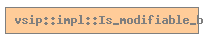

Global Namespace
Inheritance Tree
Inheritance Graph
Name Index
template <
typename
BlockT>
struct
vsip
::
impl
::Is_modifiable_block
File:
../../../vsip/core/block_traits.hpp
Specializations:
Is_modifiable_block<Component_block<BlockT,Extractor>>
Is_modifiable_block<Subset_block<BlockT>>
Is_modifiable_block<Transposed_block<BlockT>>
Is_modifiable_block<Permuted_block<BlockT,Ordering>>
Is_modifiable_block<Sliced_block<BlockT,D>>
Is_modifiable_block<Sliced2_block<BlockT,D1,D2>>
Is_modifiable_block<Diag_block<BlockT>>
Is_modifiable_block<Strided<D,T,L,M>>
Is_modifiable_block<Dense<Dim,T,OrderT,MapT>>

-
Public Data members
const bool
value
= detail :: Has_put < BlockT > :: value
Generated on Sat Apr 17 11:13:36 2010 by
synopsis
(version 0.12)


 synopsis (version 0.12)
synopsis (version 0.12)